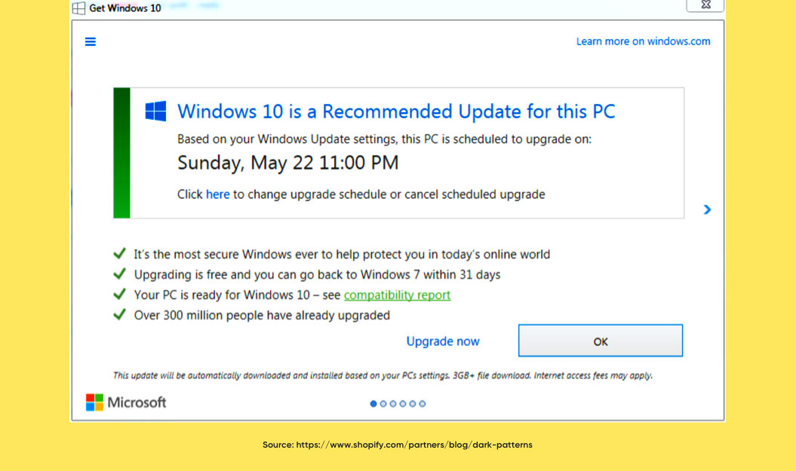
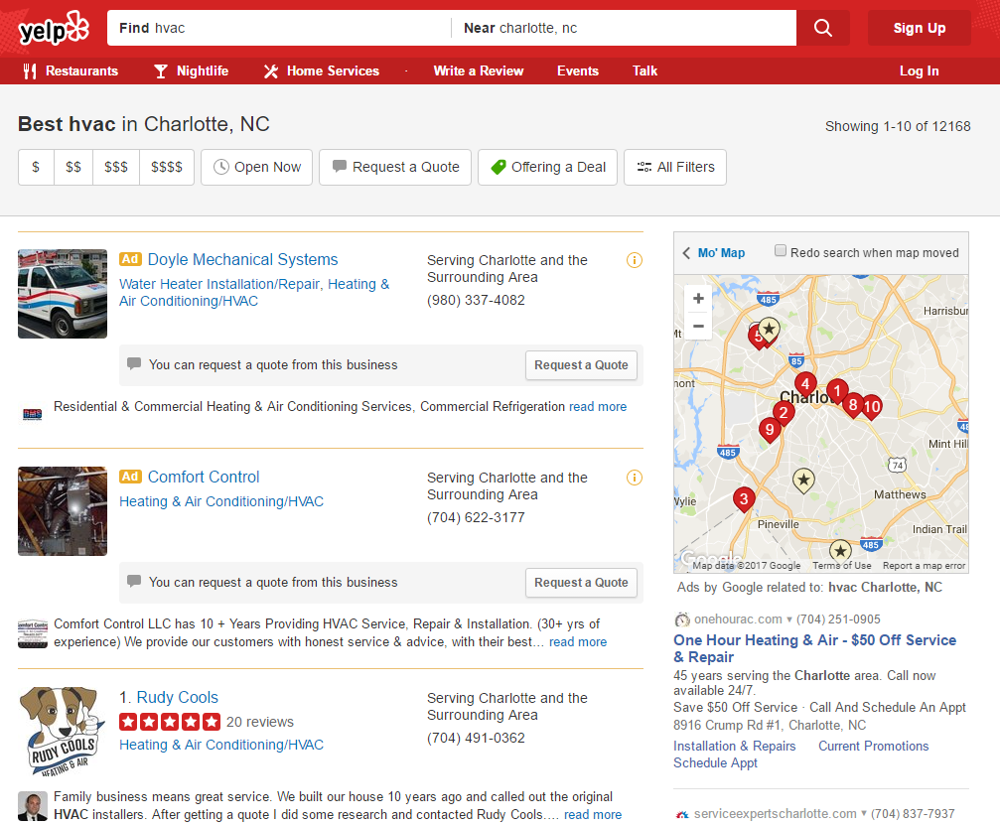
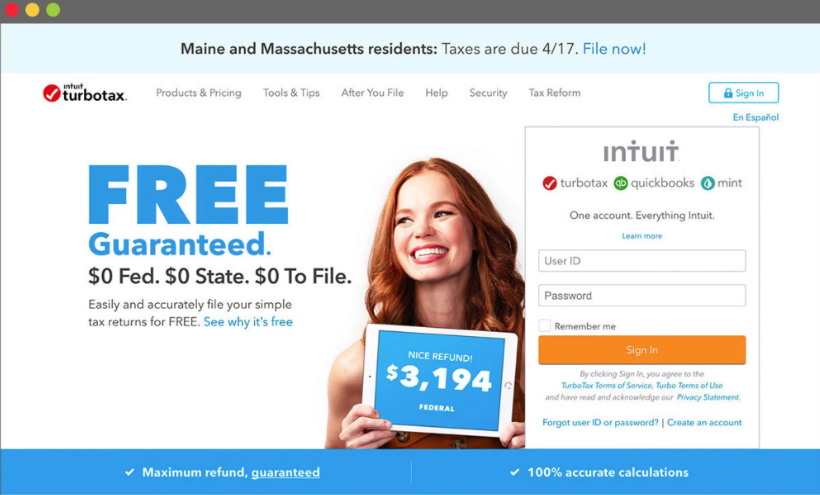
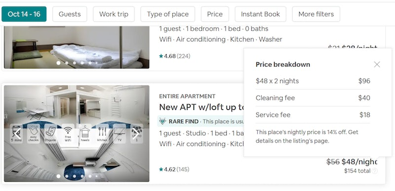
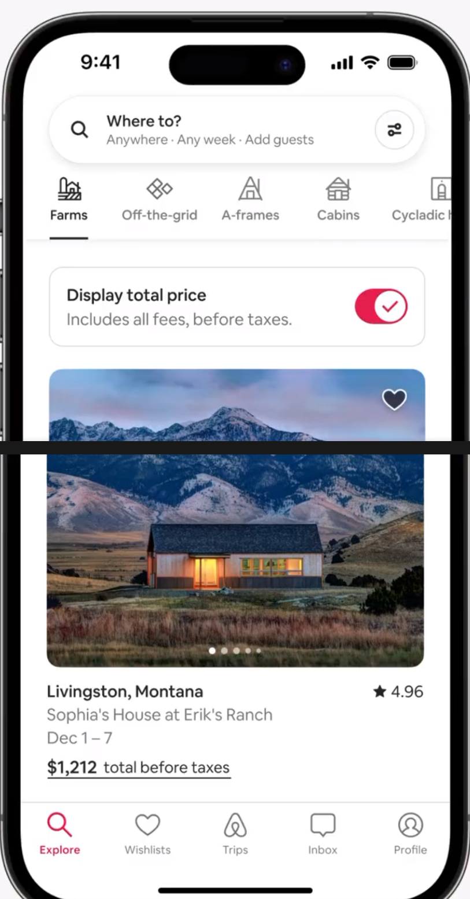
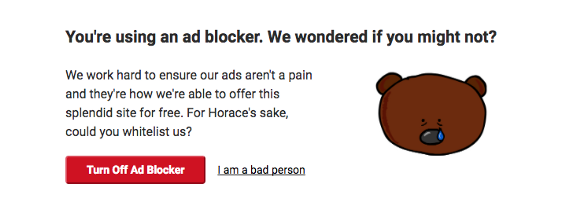
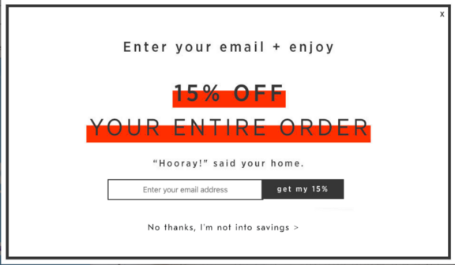
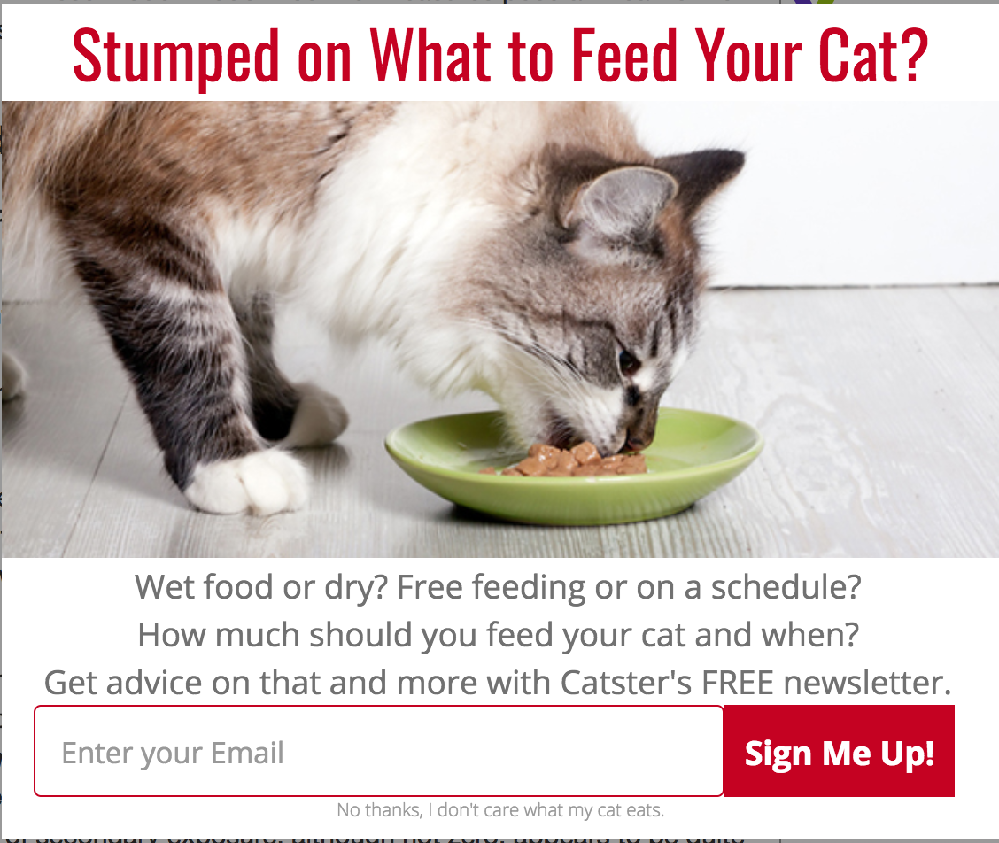
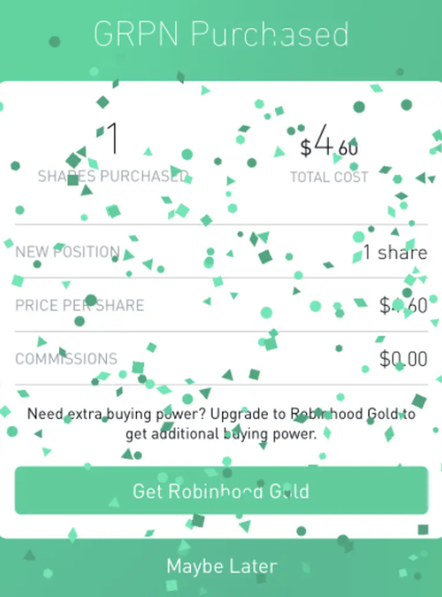

Hi everyone. Welcome to StirTrek!
Dark UX Patterns
Dark Patterns are deceptive UX/UI interactions, designed to mislead or trick users to make them do something they don't
want to do.
This term was coined in 2010 after the boom of ecommerce industries on the web.
Good user experience design is about providing the users with seamless, enjoyable interactions with products.
Are these examples deceptive, sneaky and manipulative?
Do they have the user's best interest in mind?
Let's look at some of the dark patterns in greater detail
Types Of Dark Patterns
Bait and switch is a pattern is when when a user is looking to take an action that results in a desired outcome, but instead ends up resulting in something completely unforeseen.
Bait and Switch
Example: Windows 10 Upgrade - even when you close popup - upgrade is started

As you see here, there are multiple action buttons in this popup window. But whether you click 'Upgrade Now', 'OK', or 'Close' icon - Windows upgrade would automatically start.
This pattern is adopted so that ads are disguised in the page, as if they were a part of the regular content or navigation.
Disguised Ads
Example: Yelp Ad looks like a search result

Even though the first search result clearly says it's an ad (in yellow), it is disguised to look like a real search result sorted by number of positive reviews.
Found on a large number of subscription based websites that give out free trials.
Forced Continuity
Example: Hello Fresh, Blue Apron
Friend Spam
This kind of Dark Pattern occurs when the product asks for the user's email or social media permissions under the pretense it will be used for a desirable outcome e.g. finding friends, but then spams all their contacts in a message that claims to be from them.
Example: LinkedIn
As you see here, your email address is conveniently pre-populated and call to action button suggests you to continue. If you want to disallow this - you have to click small 'Skip this step' link below
Fined $13 million dollars as part of a class action lawsuit in 2015
A user going through multiple steps to checkout and after finally getting to the last step of the checkout
process,
discovering some unexpected charges have appeared, e.g. delivery charges, tax, etc. as 'hidden costs'.
Hidden Costs
Example: TurboTax

A $40 million settlement has been reached in a TurboTax class action lawsuit that claimed the company falsely
advertised its services as being free.
Class Action Lawsuit:
TurboTax Hides Free-To-File Services, Tricks Customers Into Paying ($40M)
Misdirection is created when the user's attention is guided to a specific place so they won't notice something else that is happening.
Misdirection
Example: Skype Software Update (2016)
A lot of retailers make it hard for customers to compare the price of an item with another item, so they cannot make an
informed decision.
Price Comparison Prevention
Example: AirBnB price listings

When search results are displayed, it prominently features the daily rate for each accommodation.
But the daily rate excludes additional amounts, including cleaning fees and Airbnb's service fee.
Recently, Airbnb addressed the issue by rolling out a “display total price” button. When you toggle it, all prices listed
across the app—whether in cost-filtered search results, on maps, or on one-off property pages—are calculated to include
fees (but exclude taxes).

Another example is one of the early versions of LinkedIn Premium interface. None of the plans here tell you the price. User would have to click thru each plan to determine the price
Example: LinkedIn Premium Plans
Privacy Zuckering
This dark pattern is named after Facebook's CEO (Mark Zuckerberg) because it was first identified on Facebook (Meta).
Example: Facebook
The design makes it very easy for the user to get into a certain situation, but then makes it hard for them to get out of.
Roach Motel
Example: Verizon
The only way to cancel is to call during business hours, and make sure you reach the correct representative.
You respond to a question, which, when glanced upon quickly appears to ask one thing, but if read carefully,
asks
another thing entirely.
Trick Questions
Example: Subscription checkboxes
Confirmshaming
Confirmshaming occurs when the design tries to make a user feel guilty by taking some action.
This is regularly used to convince the user to sign up for a newsletter.
Sometimes they try to bite you emotionally
Example: Please, turn off your Ad Blocker

Confirmshaming
Example: Save 15% OFF?

Confirmshaming
Example: Cat Food?

Confirmshaming
Example: Good Times?
Let's now look at Robinhood which is full of dark patterns and other bad practices.
The app draws in young and inexperienced investors to it's platform.
It's very easy to use and trading is free, but frequent trading does not necessarily means more profits.
Case Study: Robinhood
App's simplicity encourages novice investors to take bigger risks
Free trading
Free shares at sign up
Frequent trading is encouraged
Confetti to celebrate milestones
Here is a New York Times article that talks about just how risky Robinhood is
Case Study: Robinhood
https://www.nytimes.com/2020/07/08/technology/robinhood-risky-trading.html
It features a 32 year old who started trading and lost a lot of money.
He says that he was charmed by Robinhood's one-click trading, easy access to complex investment products, and features like confetti and emoji-filled phone notifications that made it feel like a game.
Case Study: Robinhood
Animations such as confetti, celebrating successful buy trade, play on customer psychology
and encourage more trading.
Case Study: Robinhood

Robinhood users trade 9 times as many shares as E-Trade customers, and 40 times as many shares as Charles Schwab customers
Case Study: Robinhood
Here is a sad story about Alex Kearns, a 20 year old student at the University of Nebraska, who took up stock investing during the pandemic, signing up for Robinhood.
Case Study: Robinhood
20-Year-Old Robinhood Customer Dies By Suicide After Seeing A $730,000 Negative Balance
https://www.forbes.com/sites/sergeiklebnikov/2020/06/17/20-year-old-robinhood-customer-dies-by-suicide-after-seeing-a-730000-negative-balance/?sh=59b653821638
Here is screenshot from Kearns' mobile phone reveals that while his account had a negative $730,165 cash balance displayed in
red, it may not have represented uncollateralized indebtedness at all, but rather his temporary balance until the stocks
underlying his assigned options actually settled into his account.
Case Study: Robinhood
What was done since
Confetti removed
Increased educational support on the app
Institution of more rigorous criteria for eligibility for options trading
24/7 in-app phone support added
Release ESG report
Recently, a lot of apps and websites started providing more safety features.
Users can more easily block other people, report inappropriate behavior, set information to private.
Digital Wellbeing and Safety
Example: TikTok
For example, tiktok provides a section in Settings where you can control screen time management and enable restricted mode
Android OS introduced Digital Wellbeing tools to help you unplug, focus, or be able to control your kids activities.
Digital Wellbeing and Safety
Example: Android
Now let's go back to some of the patterns and see how can we avoid and respond to them.
How to avoid and respond
Here are some good online tactics you can use to help you avoid dark patterns or respond appropriately if you do
fall prey to one.
How to avoid and respond to dark patterns
Whenever you are about to buy anything online, stop for a moment and carefully examine the contents of your
shopping cart.
Double-check your online shopping cart before you pay
Have a second email address that you use to sign up for anything unimportant so that you're not receiving unwanted
spam
to your main address. You can simply get a separate email address and use that for many online signups,
keeping your main email for the truly meaningful things you want to see while most of the spam goes to your other
mailbox.
Use a junk email address for unimportant signups
It's an app. It's a website. It's a computer program. Don't feel guilty about anything the website says to
you.
Don't be shamed by an app or a website's wording
Unless you think there's tremendous value in sharing information about yourself on social media, avoid doing it.
Don't participate in fun games or other forwards where you offer up lists of things about yourself, like your
code name or a quiz about yourself.
Share minimal personal information on social media
Use your device's Settings to Enable Restricted Mode or Do Not Disturb Mode when needed.
Turn on Restricted Mode during work or school hours, and Do Not Disturb mode at night
Make it easy for customers to unsubscribe from their account pages.
Roach Motel
Easy unsubscribe
Show the total cost in the shopping cart at all times. Most customers are perfectly willing to accept these fees when disclosed upfront but dislike the secrecy.
Hidden costs
Show total cost upfront
Distinguish ads clearly so that customers will recognize them for what they are. Tricking customers into clicking ads will only frustrate them.
Disguised ads
Distinguish ads clearly
Be transparent about information you need or want from customers
Privacy Zuckering
Be transparent
While the goal of some language on the screen is to be funny and snarky, it can seem condescending and offend some customers
Confirmshaming
Use clear and simple language
Make pricing transparent. Show the benefits of plans and services. Hiding prices will invevitably make customers unhappy.
Price Comparison Prevention
Make pricing transparent
Be honest about product or service availability and features. Don't hide something upfront only to reveal it later.
Bait And Switch
Be honest
Notify customers that their trials have expired and let them choose whether to continue subscribing.
Forced Continuity
Notify customers
Few more tips for developers
How to avoid and respond to dark patterns
Do your best to push back or offer an alternative solution when someone tells you to build something that fits a
dark pattern mentioned earlier.
DEVELOPERS: push back on requirements or user experience that you think will hurt customers
Avoid popups and prompts as much as possible.
DEVELOPERS: avoid nagging user too much with popups, notifications, "unread" badges, signup prompts
Don't play tricks, let the user decide.
DEVELOPERS: provide YES and NO options that are clear to select
Research what other companies are doing in terms of good user experience practices
DEVELOPERS: take inspiration from the UX designs that follow an ethical design process
If you are a designer, ask yourself these questions
How to avoid and respond to dark patterns
According to a PwC study, a majority of customers said that the customer experience was one of the most important factors in
their decision to buy. Dark patterns lead to bad customer experience. Bad customer experience leads to loss of customers
DESIGNERS: does this design have the customer's best interest in mind?
Do you want to end up in Hall of Shame?
DESIGNERS: could this design pattern damage my client's reputation?
Can you or your company get sued or fined because your design breaks the law?
DESIGNERS: is this design unlawful?
It can be tempting to turn to dark patterns in an attempt to increase user engagement, subscriptions, and purchases.
DESIGNERS: if I were the customer, would I feel that I'm being treated honestly?
Thank You!
https://bit.ly/dark-ux-patterns
www.linkedin.com/in/vitaliymatiyash/
twitter.com/VitaliyMatiyash